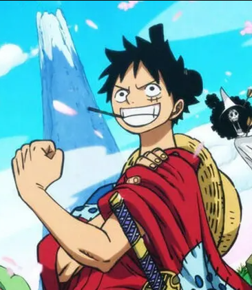
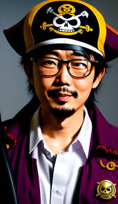
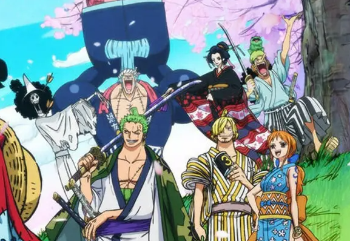

Personagens
  O protagonista principal da série é Monkey D. Luffy, um jovem pirata determinado a se tornar o Rei dos Piratas. Luffy é conhecido por sua personalidade alegre, destemida e sua habilidade de comer a fruta do diabo Gomu Gomu no Mi, que lhe concede poderes de esticamento do corpo. Ele lidera a tripulação dos Piratas do Chapéu de Palha, que inclui uma variedade de personagens únicos e poderosos.
Um dos membros mais icônicos da tripulação de Luffy é Roronoa Zoro, um espadachim habilidoso que busca se tornar o maior espadachim do mundo. Zoro é conhecido por sua determinação inabalável, lealdade a Luffy e suas impressionantes técnicas de esgrima de três espadas.
Nami é a navegadora dos Piratas do Chapéu de Palha e uma talentosa cartógrafa. Inicialmente introduzida como uma ladra, Nami se junta à tripulação de Luffy em sua busca para mapear o mundo e alcançar seus próprios objetivos pessoais.
Sanji é o cozinheiro dos Piratas do Chapéu de Palha, bem como um mestre na arte do combate corpo a corpo, usando técnicas de artes marciais. Ele é conhecido por sua devoção à culinária e sua paixão pelas mulheres bonitas.
A tripulação de Luffy também inclui membros como Usopp, um atirador habilidoso e contador de histórias talentoso; Tony Tony Chopper, um rena que comeu a fruta do diabo Hito Hito no Mi, transformando-o em uma rena-humana; e Nico Robin, uma arqueóloga que possui conhecimentos valiosos sobre a história antiga do mundo.
Além dos Piratas do Chapéu de Palha, "One Piece" apresenta uma infinidade de outros personagens, como os Shichibukai (os Sete Guerreros do Mar), os Yonko (os Quatro Imperadores), a Marinha Mundial e os Piratas do Pior Geração, cada um contribuindo para a complexidade e profundidade do universo da série. Com tantos personagens memoráveis e cativantes, "One Piece" continua a encantar fãs ao redor do mundo com suas histórias emocionantes e aventuras épicas.